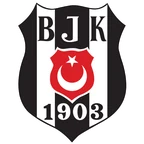
Бешикташдома, 8-е место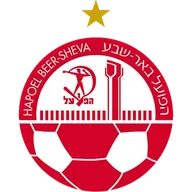
Хапоэль Беэр-Шевав гостях, 33-е местоБешикташ — Хапоэль Беэр-Шева прогноз на матч 26 ноября
Расчёт модели
- 1,9 : 1,3ожидаемые голы
- 63 %тотал больше 2,5
- 62 %обе забьют
Цифры считает модель по данным сайта, а не эксперт. Это вероятности, а не гарантия исхода. Как считает модель · словарь терминов.
- ТурнирЛига Европы
Коротко о матче
Главное перед игрой — серия: Хапоэль Беэр-Шева — 3 поражения подряд. По форме разница заметная: в пяти последних матчах Бешикташ — 2 победы, Хапоэль Беэр-Шева — ни одной победы. Слабое место — оборона: Бешикташ — в среднем 2,0 пропущенного мяча за игру в этих пяти матчах, так что у соперника будут моменты.
По расчёту модели фаворит — Бешикташ: 53 % на победу. Это оценка по данным, а не обещание исхода.
Форма: последние матчи
Бешикташ 2 победы из 4
 В4:1
В4:1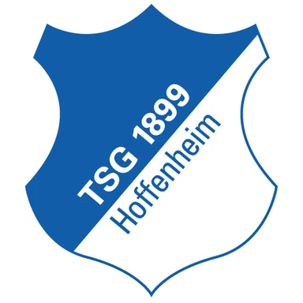
В3:2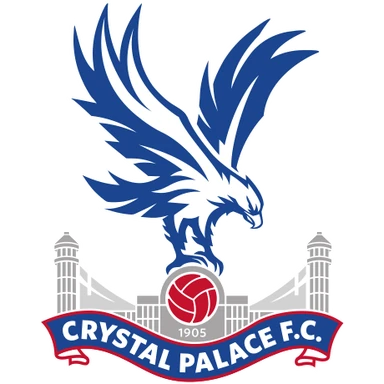
Н2:2 П2:3
П2:3
Хапоэль Беэр-Шева 0 побед из 4
- Н0:0
 П1:2
П1:2- П0:4
- П0:2
Положение в таблице
| Команда | Место | И | В | Н | П | Голы | Очки |
|---|---|---|---|---|---|---|---|
| Бешикташ | 8 | 4 | 2 | 1 | 1 | 11:8 | 7 |
| Хапоэль Беэр-Шева | 33 | 4 | 0 | 1 | 3 | 1:8 | 1 |
Другие матчи Лиги Европы в этот день
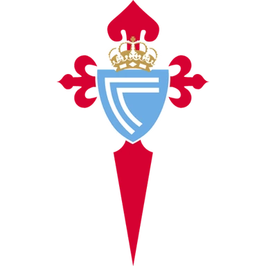
Сельта — Борнмут20:45 МСК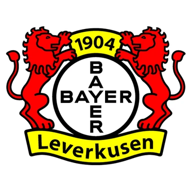
Динамо Загреб — Байер20:45 МСК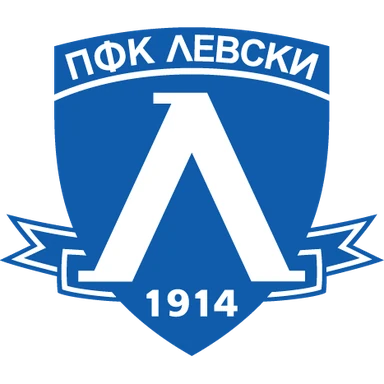
Марсель — Левски20:45 МСК
 Олимпиакос — Милан20:45 МСК
Олимпиакос — Милан20:45 МСК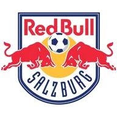
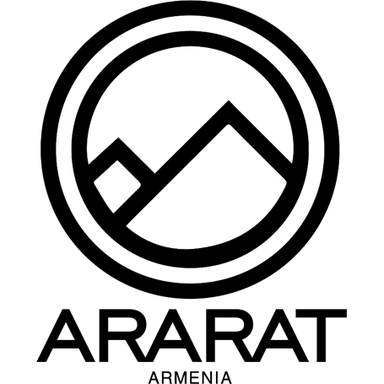
Зальцбург — Арарат-Армения20:45 МСК- Юнион Сент-Жилуаз — Лех20:45 МСК
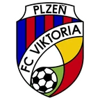
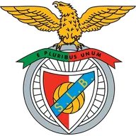
Виктория Пльзень — Бенфика20:45 МСК- Кристал Пэлас — Реал Сосьедад23:00 МСК
Куда дальше
Материалы носят информационный характер и не гарантируют результат. Реклама букмекеров на сайте не размещается. Сайт только для совершеннолетних (18+).